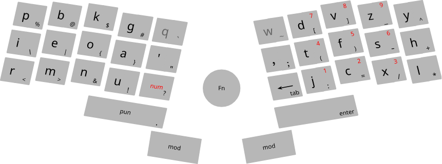

Comshell
1, Comshell
command based user interface
command based user interfaces (using keyboard, voice, gesture) are faster, more convenient and more powerful,
than pointer based user interfaces (using mouse, touch, pen)
pointer based interface seems appealing at first sight, because of its discoverability
but with simple uniform GUI (ie the oposite of what we see in websites),
there is no need for a pointer based user interface
touch interface has an additional problem: interaction at a distance is not possible
but it can still be useful in simple or special applications
detection of voice commands is a relatively simple process (compared to general speech recognition),
because we only need to match against a relatively small set of commands
a headset with near range microphone can be used, to exclude far away sound sources
also it is better to put battery and transmitter of the headset in a separate unit which can be put in a pocket
this makes the headset lighter and safer
for those who neither can use all their fingers, nor can talk, gesture based (2d) input can be implemented

, comma followed by a letter -> the symbol on its bottom right corner
, ";" followed by "psi" followed by space or comma -> "ψ" followed by one space or nothing
, two apostrophes then an alphabetical letter -> capital letter
, "aBcd" then two apostrophes followed by one space -> "AbCD" followed by one space
Kinesis Advantage 2 keyboard
for compatibility with other applications, we may still need a mouse,
plus these extra keys which can be put in the middle of the keyboard:
, arrow keys, "page up", "page down", "home", "end", "tab"
, "alt", "ctrl", "shift"
and a row of punctuations on top
also we can have another row for function keys, plus the "delete" key
Comshell
Comshell is a unified computing environment, utilizing command based user interface
project directories reside in directories named "projects" or "projects.*",
inside home directory or mounted disks
list of all projects will appear in a floating layer, at the center of screen
each group of projects (which are in the same directory) will be shown in separate tabs
here you can open a terminal to do system administration,
and to power off, reboot, logout, suspend, or lock the system
in a project view, the list of files of a project will be displayed in the left side'bar
opened files are indicated by a line below them
multiple views of a file are indicated by sections in this line
files and directories with names starting with a dot, will be hidden
".cache" directory inside a project is for files we don't want to share or backup
text files will be opened in a text editor
directories with ".g" suffixes, will be opened in a gallery view
files and directories inside a gallery, will be opened in a floating layer
non'local projects, web pages, PDF documents, etc, accessed from links inside the main project,
will be opened in a floating layer
web pages: move caret between visual elements (ignoring structural elements)
modal key'bindings
modes (normal mode and insert mode) must be visually distinctive
press "esc" or "tab" to go to normal mode
in normal mode we can:
, press "enter" to go to insert mode
, move the cursor to the next or previous word
, move the cursor to the next or previous lines or table cells
, move the cursor to the next or previous paragraph
, start and end selection, then copy or cut
, paste
, undo
, find
, navigation: move, search
, selection
, completion
double space:
, at the beginning of line: indent
, otherwise: complete (auto'completion does not disappear with only one space)
2, computers
asynchronous digital circuits
in conventional digital circuits when the inputs change, the outputs can have temporary invalid values,
until they stabilize to the valid values
but for the circuit to do its job, gates with memory (registers),
must operate only when the inputs have correct values
one solution is to synchronize registers with a global clock signal
the period of clock signal is made long enough for the circuit to become stable
disadvantages of synchronous circuits:
, we have to split long operations into several smaller ones,
which can be performed in successive clock cycles (a technique known as pipelining)
otherwise the circuit would be slow and inefficient
, distributing a high'fan'out, timing'sensitive clock signal can be complicated
, electromagnetic interference at the clock frequency and its harmonics
, widely distributed clock signal takes a lot of power, and must run whether the circuit is receiving inputs or not
although "clock gating" can help to reduce some of the problems of synchronous circuits,
i think the real solution is to use asynchronous circuits
the only sane kind of asynchronous circuit which i could imagine is this:
, next to any data wire, there is a control wire which determines if the data is valid or not
, when a register wants to change its outputs, it first invalidates them,
for a duration equal to the delay of one gate
, any gate receiving an invalid input, invalidates its outputs
, this way all data which is going to change in the future, is first invalidated
, registers operate only when all inputs are valid
computers
cpu, memory, peripherals, this seems to be the only practical architecture for the hardware of computers
cpu runs a sequence of simple computations, called instruction codes, one by one
compilers are special programs that generate instruction codes,
from a program written in a structured and human readable language
there is always possibility of backdoors for closed source CPU,
especially if the boot firmware is also closed source
recently introduction of "secure execution environment" makes this situation even worse
it's a closed source, full'blown, always'running mini operating system,
with full access to the whole system (including memory and network)
furthermore they have made it practically impossible for users to disable it
this mess of a design cries out for hidden and quite sophisticated backdoors
on X86 architectures we can have a GPU with open source driver
but the default boot firmware on nearly all systems are closed source
flashing a CoreBoot based boot firmware is possible, but there still will be closed source parts (Intel FSP)
regardless there is no easy way to get rid of Intel ME (or AMD PSP)
though there are some hacks to disable (but not completely remove) Intel ME:
ARM architecture is closed source too, but we can have a GPU with open source driver (Qualcomm/Adreno)
the most used boot firmware is the open source implementation of UEFI called EDK2
flashing LinuxBoot as a UEFI DXE, or flashing a CoreBoot based boot firmware is possible
ARM TrustZone can host an open source operating system too, apparently:
open source CPU: RISC-V, Power ISA
no adequate hardware available yet
one read'only boot firmware, plus a writable one
, interrupted flashing does not brick the device
, no need for complex signing mechanism to make sure a device's firmware is not malicious
you just have to make sure that the device boots from the read'only flash,
and that the writable flash is empty, the first time you boot the device
programs usually do not run directly on computer hardware
instead they run on a more sophisticated software machine (a virtual machine) called the kernel
in theory we can live without a kernel (an idea sometimes called a library operating system),
and it can be usefull for some use cases (like IoT devices),
but an kernal based operating system makes developing and testing programs, much easier
Linux is a highly developed, constantly evolving, open'source kernel
3, Alpine Linux
using Alpine Linux Linux we can easily setup a Linux based operating system
anything which needs a kernel based operating system can use Alpine:
, it supports a wide range of processor architectures
, it's suitable for systems with limited resources
, the stable releases provide a security proven system for servers
current problems of Alpine:
, Musl's allocator must be replaced with "mimalloc"
https://www.linkedin.com/pulse/testing-alternative-c-memory-allocators-pt-2-musl-mystery-gomes/
https://github.com/emerzon/alpine-mimalloc/blob/master/Dockerfile
https://microsoft.github.io/mimalloc/overrides.html
, OpenRC must be replaced with "s6"
, in "busybox-initscripts" use "mdevd" instead of "mdev"
, all of these must be fixed in "mkinitfs" too
to install Alpine, boot to a live Alpine system (using a disk image or netboot), then:
; curl https://damoonsaghian/Comshell/archive/master.tar.gz | tar -xz
; cd Comshell/alpine
ensure that the files aren't malicious
find the device you want to install Alpine Linux on:
; fdisk -l
prepare the disk (note that the content of the disk will be deleted):
; instalp format sdx
now install Alpine Linux on it:
; instalp sdx
if the installation gets interrupted, just run the last command again (no need to reformat the disk)
after rebooting to the installed system, it will ask for the root password and a user account
logout of root, and login as the user you provided
to install packages: "alp add package-names"
to remove packages: "alp del package-names"
"alp" uses "apk" and BTRFS snapshots to manage packages in such a way that
changes on the file'system would be atomic, and does not interfere with the running system
as a result when you install an application, or update the system using "alp",
the system must be restarted for it to take effect
removing packages is done live though (otherwise managing "/etc" would be complicated)
all of this means that we can have reliable automatic updates
you can set "user1" for automatic login (run as root):
; echo 'agetty_options="--autologin <username> --noclear"' > /etc/conf.d/agetty.autologin
but to protect the computer from physical attacks, you have to disable automatic login,
and lock the session when you leave the computer
in addition you have to:
, somehow prevent tampering with hardware
, protect boot firmware by a password
, disable changing the boot device
these can make physical attacks more difficult, but keep in mind that
physical access to a computer is root access, given enough time and resources
4, Codev
collaborative development without the need to keep it's whole history (as is done in version control systems)
we will have three BTRFS snapshots in a project's

directory:
, pristine
, indexed
, remote
files will be synced up/down to/from the the remote from/to

there is no directory tree here, instead we have an index file
"project-path/.data/codev/indexed/index"
entries are separated with empty lines
each entry has 3 lines:
, path
, modification time
, hash
create a remote repository:
; codev new
; codev pull
the shown diff will be based on the working directory, pristine and remote
after merging:
; codev push
Codev also automatically backs up all the projects in those directories containing a ".backup-paths" file
to run it manually:
; codev backup
add or remove users that can push
; codev add username1 username2 ...
; codev remove username1 username2 ...
files in ".cache" directory will not be synced